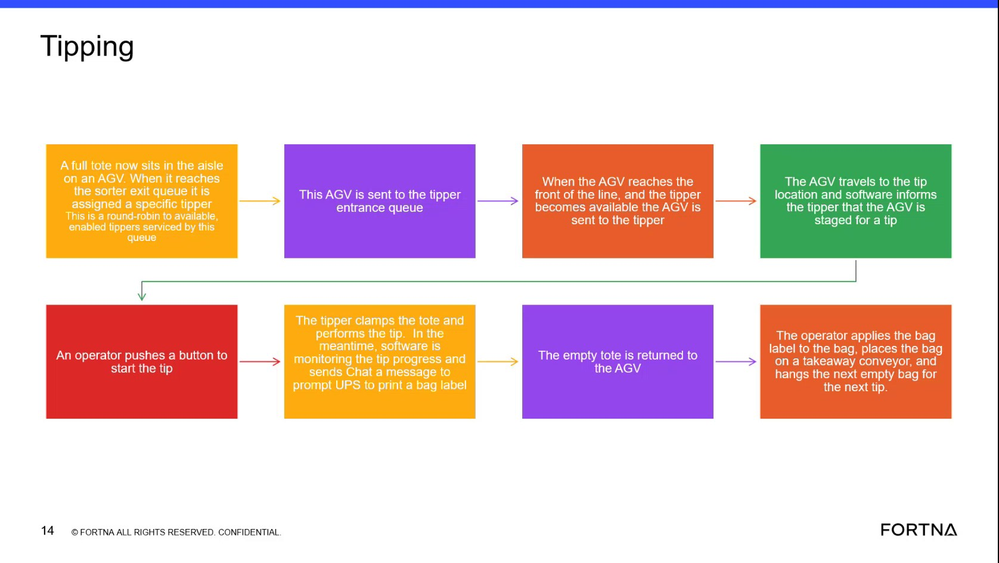

| Procedure ID | proc_interpret_an_agv_departure_without_a_replacement_agv_behind_it_v1 |
|---|---|
| Title | Interpret An AGV Departure Without A Replacement AGV Behind It |
| Procedure Type | reference |
| Primary Role | L1_support |
| Support Safe | Yes |
| Validation Status | needs_sme_review |
| Merge Status | source_finalized |
Use the training-source explanation of AGV exchange behavior to interpret a visible gap when a front AGV moves out without another AGV replacing it behind. The documented meaning is that normal exchange behavior is paired, so a gap likely indicates the trailing AGV faulted or was not backfilled properly.
Use when a user or support person observes a front AGV move out and no replacement AGV appears behind it, and the goal is to interpret that condition using the training source's documented AGV exchange behavior.
Responsible role: L1_support
Instruction:
Observe the station or aisle and confirm that a front AGV moved out without another AGV replacing it behind.
Expected result:
The observed condition is clearly identified as a front AGV departure with no visible replacement AGV behind it.
Screens / Images:

Stop or Escalate If:
Responsible role: L1_support
Instruction:
Use the documented exchange behavior as the comparison point: the front AGV will not move until there is an AGV behind it because software sends both commands at the same time.
Expected result:
The observer understands that normal exchange behavior is paired and should include a trailing AGV behind the front AGV before move-out.
Screens / Images:
Stop or Escalate If:
Responsible role: L1_support
Instruction:
Check whether the trailing AGV has a fault or whether the situation appears to match the source-described case where the AGV behind was reported ready for a new task while also faulting, resulting in improper backfill.
Expected result:
The observed gap is associated with one of the source-supported exception explanations: trailing AGV fault or improper backfill.
Screens / Images:
Stop or Escalate If:
Responsible role: L1_support
Instruction:
Record that the observed gap is not normal paired exchange behavior and matches the source-described fault or backfill exception.
Expected result:
The condition is documented as an abnormal exchange gap consistent with trailing AGV fault or improper backfill.
Screens / Images:
Stop or Escalate If: